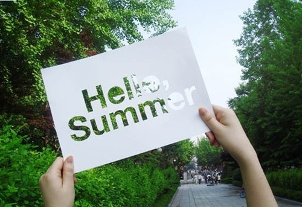

饭后，无聊地走在路上，月明星稀，晃晃荡荡，逛遍了整个校园，大一大二学习生活的地方，虽未有打的改变，终究还是慢慢的找不到了归属感。想到朋友曾经说的一句话，有些心情，现在不记录，也许在以后看来不过笑话一场，自然也就是失去了落笔的心情。想来也是啊，就像现在的我回头去看当初写下的那些文字，会觉得幼稚，不成熟，但是也会不由自主的去怀念当时的自己，当时的简单，当时的漫不经心。记得朋友当时这么评价我，你说你年纪轻轻的，写些无病呻吟的话干嘛，装深沉?装闷骚?我就笑着回答，你不懂，你知道吗，我的笔名就叫做“夕花朝拾者”(早改了)，哈哈，开个玩笑。
初夏的夜色真的好美，许多往事在心头萦绕，回想那些走过的足迹，在记忆里边徘徊不定，始终无法忘记曾经的温暖气息在回忆里蔓延，也只好打开心扉，张开怀抱，任其在这静美的夜中，慢慢流淌。至今任在想，大学四年到底带给了我多少难忘美好的回忆，到底给了我多少珍惜的人儿啊?一直骄傲着，那些哭笑参半的日子，是你或者你们陪我一起走过，那些年里的人儿，你们是我心中一首永远唱不完的歌!
然时光总是那么无情，让记忆越陷越深，总是想起那曾经炽热儿女甜美的青春年华，总是想起那些我们一起谈天说地的日子，总是想起那昙花一现的欢声笑语，假如幸福能够定格，我希望能够永远活在那段日子里。如若说，追忆是一种枉然，那么记忆便永远不可磨灭，不管是匆匆的相聚，还是短暂的拥抱，我的朋友们，你们都将是我最初的温暖和感动。
不知不觉，走到了这盏路灯下，每个夜晚，考研复习结束后都喜欢从这里走过，喜欢一个人走在路灯下，昏黄的灯光会把影子拖得长长的，会傻乎乎的做着各种幼稚的动作，“手舞足蹈”，看着那夸张的动作，常常会不自觉的发笑(现在想想有点傻乎乎的，我是男人哎，不管了呵呵)。喜欢透过指缝看路灯，看着那圆圆的光点，在指尖跳跃，眯着眼，略加上点想象，你会感觉到淡淡的暖意，然后顺着你的指尖流遍全身。许是当时压力太大，心情烦躁，许是天性使然，那又如何，现在想来不失为一件乐事。路灯的位置不算明显，算是有点偏僻吧，不知道我是不是第一个给它拍照的人，或许吧。也许，多年以后，当我翻开日记，还能记得，曾经大学校园的某个角落，某棵树旁的一盏路灯，一直默默的伫立在那里，给校园的黑暗带来一丝光亮，一丝暖意，一丝回忆。原谅我吧，写不出华丽的辞藻来修饰你，也许某年某月，也有这么一个像我这样的人，路过这里，心血来潮，专门写篇文章来证明你的存在。
